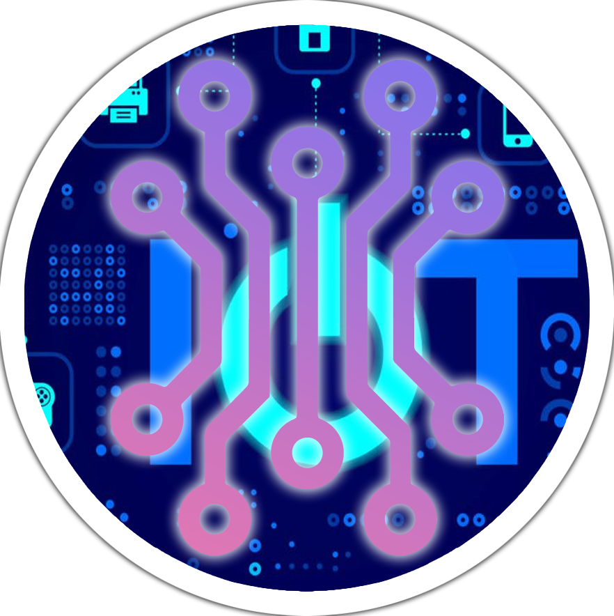

<nav class="navbar navbar-expand-lg">
    <div class="container-fluid">
      <a class="navbar-brand" href="home"></a>
      <button class="navbar-toggler" type="button" data-bs-toggle="collapse" data-bs-target="#navbarSupportedContent" aria-controls="navbarSupportedContent" aria-expanded="false" aria-label="Toggle navigation">
        <span class="navbar-toggler-icon"></span>
      </button>
      <div class="collapse navbar-collapse" id="navbarSupportedContent">
        <ul class="navbar-nav me-auto mb-2 mb-lg-0">
          <li class="nav-item">
            <a class="nav-link active" aria-current="page" href="home">IoT Attribute Data Management</a>
          </li>
          <li class="nav-item">
            <a class="nav-link" href="https://www.facebook.com/shinya.Ft/">About Us</a>
          </li>
        </ul>
      </div>
    </div>
    <div class="form-inline my-2 my-lg-0">
      <div>
        <a href="profile" class="nav-link active">User</a>
      </div>
      
    </div>
  </nav>